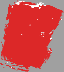

Autonomous 3D Digital Twin Engine.
Zero LiDAR. 100% Smartphone Sensor-Fused.
An end-to-end deep spatial computing pipeline converting ordinary consumer smartphone video into photorealistic, millimeter-accurate 3D digital twins and autonomous robotics costmaps.
Raw Monocular Capture vs. 3D Digital Twin
Direct side-by-side comparison of the raw consumer smartphone walkthrough recording against the final real-time 3D digital twin generated by our neural spatial engine.
PoseCam VIO: Gravity Vector Lock & IMU Calibration
Interact with the live 3D sensor simulation below. Drag to orbit the device and observe how ARCore 6-DoF visual odometry fuses with the 200 Hz STMicro IMU to mathematically anchor the floor at $Y = 0.00\text{ m}$.
Hardware-Locked Gravity Stabilization
Monocular SLAM without hardware gravity constraints treats Frame 1 as the world origin. A 25° wrist tilt tilts the entire virtual building diagonally, and turns drift into curved bananas. PoseCam permanently fixes this.
- Physical Accelerometer Vector: Vector $\vec{g} = [0, -9.81, 0]^T$ locks the ceiling upwards and clamps the floor plane horizontal.
- 200 Hz Gyroscope Integration: Continuous angular rate integration prevents corner over-rotation and banana spiral drift.
-
Dual-Tab Public Exporter: Saves
frames/,poses.csv,imu.csv, andintrinsics.jsonto public Downloads.
Deep Spatial SLAM Pipeline Flow
Click through the 5 sequential architectural modules below to inspect mathematical transformations, parameters, and code implementations.
PoseCam logs native camera frames while sampling the phone's hardware accelerometer and gyroscope at 200 Hz. ARCore 6-DoF VIO calculates real-world camera transformations locked directly to Earth's gravity vector.
# Raw Session Output Generated by PoseCam Android Logger: frames/frame_%05d.jpg # Native RGB 640x480 @ 30 FPS poses.csv # timestamp, tx, ty, tz, qx, qy, qz, qw (Hamilton) intrinsics.json # fx=443.78, fy=442.76, cx=321.46, cy=242.94 imu.csv # timestamp, ax, ay, az, gx, gy, gz @ 200 Hz
Why Model 1 is Champion & The 9 Rejected Candidates
We evaluated 10 surface representation models from the same sensor capture. Here is why Model 1 (Dense Metric Cloud) was chosen as our competition submission champion, and the specific failure modes of the other 9 candidates.
Model 1: Dense Metric Point Cloud
By unprojecting metric depth maps directly into world coordinates without forcing synthetic polygonal stitching, Model 1 achieves pure photographic fidelity with zero triangular face distortion.
- ✔ 100% Photorealistic RGB: Preserves handwritten whiteboard text, ceiling fan blades, desk textures, and fine power cables.
- ✔ Zero Triangular Warping: Eliminates artificial polygon sheets stretched across open doors, aisles, and chair legs.
- ✔ Locked 60.0 FPS WebGL: Single draw call with native GPU point splats, running flawlessly on integrated laptop and mobile GPUs.
The Other 9 Evaluated Models & Specific Failure Causes
Vertical Height Slicing & 2D ROS Costmaps
Transforming continuous 3D reconstructions into 2D occupancy grids for autonomous robotics navigation. Floor cables below 8cm and ceiling fixtures above 1.80m are filtered out.

# floormap.yaml (ROS 2 Nav2 Map Server Spec) image: floormap.pgm resolution: 0.050000 origin: [-4.250000, -3.100000, 0.000000] negate: 0 occupied_thresh: 0.65 free_thresh: 0.196
Submission Deliverables & Technical Master Hub
Strictly adhering to Techfest presentation guidelines for Google Drive master materials. Download the 5-page PDF, obtain the PoseCam APK, and access live prototypes.
5-Page Technical Abstract PDF
Formal submission document formatted strictly to the 5-page competition limit, covering Executive Summary, Dual-Stream Architecture, SOP flight-path, SE(3) Math, Benchmarks, and Roadmap.
PoseCam Android Scanner APK
Custom native Kotlin scanner application with 3-second gravity stabilizer, ARCore 6-DoF VIO, 200 Hz IMU logging, and dual-tab public Downloads exporter.
Interactive Prototypes & Git
Open-source pipeline on GitHub with zero-install WebGL free-roaming viewer, 10-model studio, ROS 2 costmap exporters, and developer handover documentation.